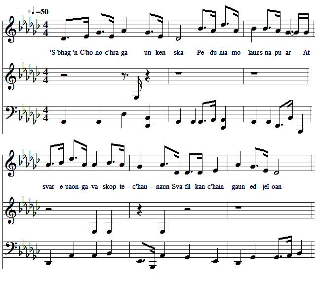

Òran Sliabh an t-Siorraim
Lament on John of Conchra of Clan McRae who fell at Sherrifmuir (1715)
Elegie de Jean de Conchra, du Clan McRae, tombé à Sherrifmuir (1715)
Author unknown
As recorded for the School of Scottish Studies in 1972Tune - Mélodie
"Òran Sliabh an t-Siorraim"
Sequenced by Christian Souchon

|
To the tune:
The sound background to this page is the MIDI transcription of the soundtrack record in the School of Scottish Studies. The date and place of record are 1972, at Letterfearn (Glenshiel in County Ross and Cromarty). The contributors were Eddie McRae, Kenneth Chisholm, Farquhar Chisholm and Finlay Chisholm. The reporters were Donald Archie McDonald and Ian Fraser. Permanent link: www.tobarandualchais.co.uk/fullrecord/69466/1 The tune is pentatonic. Here is a (rough) attempt at phonetic transcription of the lyrics: 1. 'S bhag 'n C'honoc'hra ga un kenska Pe dunia mo laun s na puar At svar e uaon-gava skop tec'haunaun Sva fil kan c'hain gaun edjeï oan 2. C'hu tom do kanac'h shivaur trin Iain C'honoc'hra skar Mor met E tha sni ia nisel c'hu sna c'hra mel Sra passu eu trin na c'hrin lis 3. Sva peruc'h kri le un speurin duaïe N' gouri c'ha maru fiaruan kruaïe Clan McRae in the 1715 Jacobite Rising "The Jacobite Rebellion of 1715 was a disastrous event for the McRaes. The crucial battle was the Battle of Sherrifmuir. The McRaes formed the left flank and were left unprotected when the Jacobite cavalry was moved by error across to the right. The Highland foot (McRaes) were charged by the Government cavalry, fell back and rallied again and again, up to twelve times. Of the 663 Jacobite casualties suffered in the battle 58 of those killed were McRaes. Among those killed was Chieftain John of Conchra, who was distinguished in battle and esteemed in the Highlands, he was one of the "Four Johns of Scotland", so called by Highlanders from their valour at the Battle of Sheriffmuir. 1. John McRae of Conchra, 2. John Murchison of Auchtertyre, 3. John Og McKenzie of Applecross, who married a daughter of Rev. John McRae, last Episcopalian Minister of Dingwall (the Clan Historian), 4. John McKenzie of Hilton. All of them were officers of Seaforth’s regiments (see Will ye go to Sherrifmuir , notes 5 and 6) and all were killed in battle. Clan McRae and the Jacobite cause During the long period of religious and civil warfare which preceded and followed the Revolution of 1688, the MCraes had supported the Episcopal Church and the House of Stuart, and as a result they suffered much, not only in property, but also in life and limb. In the Rising of 1715 a great many of them fell at the battle of Sherrifmuir, and tradition relates, as a proof of the loss they then sustained, that in the parish of Kintail alone fifty-eight women were made widows on that fatal day. As already mentioned, their chieftain Ian Mor na Conchra (Big John of Conchra) was killed In 1719 another rising was staged in the McRae country of Kintail. The Jacobites were defeated and Eilean Donan castle destroyed. In 1745, notwithstanding the fact that Seaforth remained loyal to the House of Hanover, a number of young and resolute McRaes left Kintail to join the army of Prince Charles, and it is said that many more would have followed if they had not been restrained by force. Of those who went no one ever again returned. The first civilian executed after the rising (allegedly for harbouring the fleeing Prince Charles) was a McRae." Source: "Wikipedia: Clan McRae, Four Johns Of Scotland" |
A propos de la mélodie:
Le fond sonore de cette page est la transcription MIDI d'un enregistrement phonographique conservé par la School of Scottish Studies. Cet enregistrement a été réalisé en 1972, à Letterfearn (Glenshiel, comté de Ross et Cromarty). Y ont participé MM. Eddie McRae, Kenneth Chisholm, Farquhar Chisholm et Finlay Chisholm. Il fut réalisé par Donald Archie McDonald et Ian Fraser. On le trouvera à cette adresse: www.tobarandualchais.co.uk/fullrecord/69466/1 La mélodie est pentatonique. Voici une tentative (approximative) de transcription phonétique des paroles: 1. 'S bhag 'n C'honoc'hra ga un kenska Pe dunia mo laun s na puar At svar e uaon-gava skop tec'haunaun Sva fil kan c'hain gaun edjeï oan 2. C'hu tom do kanac'h shivaur trin Iain C'honoc'hra skar Mor met E tha sni ia nisel c'hu sna c'hra mel Sra passu eu trin na c'hrin lis 3. Sva peruc'h kri le un speurin duaïe N' gouri c'ha maru fiaruan kruaïe Le Clan McRae et le soulèvement jacobite de 1715 "Le soulèvement jacobite de 1715 fut un désastre pour le Clan McRae. La bataille décisive fut celle de Sherrifmuir. Les McRae constituaient l'aile gauche et furent laissés à découvert lorsque la cavalerie fut déplacée à tort pour être engagée à droite. L'infanterie des Highlands (le Clan McRae) fut alors chargée par la cavalerie adverse. Contrainte à reculer, elle tenta à de nombreuses reprises, douze au total, de regagner le terrain perdu. Sur les 663 morts du camp Jacobite, on compte 58 McRae. Parmi eux, il y avait le "chieftain" Jean de Conchra, dont le palmarès belliqueux lui valait l'estime de toutes les Hautes Terre. Ce fut l'un des "Quatre Jean d'Ecosse", titre honorifique décerné par les Highlanders à quatre combattants de Sheriffmuir. 1. Jean McRae de Conchra, 2. Jean Murchison d'Auchtertyre, 3. Jean le Jeune McKenzie d'Applecross qui épousa une fille du Rév. John McRae, le dernier pasteur épiscopalien de Dingwall (qui était aussi l'historien du clan), 4. John McKenzie de Hilton. Ils étaient tous les quatre officiers du régiment de Seaforth (cf. Will ye go to Sherrifmuir , notes 5 et 6) et ils furent tous tués lors de la bataille. Le clan McRae et la cause jacobite Pendant la longue période de guerres civiles et religieuses qui précéda et suivit la "Glorieuse révolution" de 1688, les McRae avaient soutenu l'Eglise épiscopale et la dynastie des Stuart, ce qui explique les considérables pertes en terres et en vies humaines qui leur furent infligées. Lors du soulèvement de 1715 leurs pertes furent particulièrement lourdes et l'on en veut pour preuve la tradition qui affirme que, dans la seule paroisse de Kintail, cette bataille fatidique fit cinquante-huit veuves. Comme on l'a dit le "chieftain" Ian Mor na Conchra (le Grand Jean de Conchra) comptait parmi les morts. En 1719 un nouveau soulèvement éclata sur les terres des McRae de Kintail. Les Jacobites furent battus et le château d'Eilean Donan fut détruit. En 1745, bien que Seaforth lui-même soit resté fidèle aux Hanovre, un certain nombre de jeunes gens résolus du clan McRae partit de Kintail pour rejoindre l'armée du Prince Charles. On affirme que beaucoup d'autres les auraient suivis, s'ils n'avaient pas été retenus de force. Aucun de ceux qui partirent n'est revenu. Le premier civil à voir été exécuté après le soulèvement (soi-disant pour avoir accordé l'asile au Prince Charles en fuite) fut un McRae." Source: "Wikipedia: Clan McRae, Les quatre Jean d'Ecosse" |